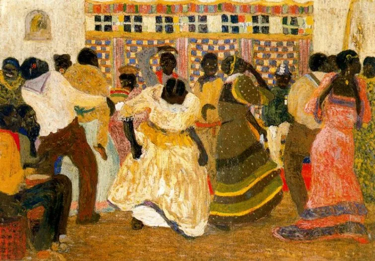

El candombe afina sus lonjas alrededor del fuego y organiza una música que camina. Su historia urbana incluye barrios, desalojos y una pregunta todavía abierta: quién puede permanecer donde suena.
En una fotografía tomada en Montevideo en febrero de 2011, los tambores ocupan la calle entre capas rojas y amarillas. La ficha de la imagen identifica un cruce de 8 de Octubre y Carlos Cocker, no Barrio Sur ni Palermo. El detalle importa porque la imagen puede mostrar una práctica real sin representar el lugar que suele usarse para contar su origen. Hay cuerpos vestidos para tocar, instrumentos sostenidos con correas y una calle transformada por su paso. No vemos el fuego ni podemos deducir de la foto el ritmo exacto que se ejecutaba. La fotografía muestra lo suficiente para empezar y demasiado poco para terminar una historia. [7]
La otra imagen es una pintura de Pedro Figari fechada en 1921. Colocarla junto a la foto no permite afirmar que el candombe de entonces y el de 2011 fueran idénticos. Una pintura selecciona gestos, relaciones y colores; una cámara selecciona un instante desde cierta posición. Entre ambos registros hay décadas de migración, transformaciones musicales, políticas urbanas y trabajo comunitario. Su proximidad puede hacernos creer que observamos una continuidad sin fracturas. Este ensayo parte de esa dificultad: mirar una práctica viva exige seguir lo que permanece y lo que cambió, sin pedir a una imagen que cierre la discusión. [7][8]

La UNESCO inscribió en 2009 «El candombe y su espacio sociocultural: una práctica comunitaria» en la Lista Representativa del Patrimonio Cultural Inmaterial de la Humanidad. La fórmula contiene más que un género musical. Nombra una relación entre personas, llamadas de tambores y barrios. La descripción sitúa prácticas en Sur, Palermo y Cordón, habla de reuniones alrededor de fogatas antes de templar los tambores y registra la diferencia entre los toques. La palabra «espacio» no es un adorno administrativo: si quitamos la calle, la reunión, el camino y las personas que responden, quedan tres tambores y perdemos buena parte de la obra colectiva. [1]
Afinar juntos
El Ministerio de Educación y Cultura de Uruguay describe un tambor de forma semejante a un barril, con una membrana tradicionalmente de lonja animal sujeta al cuerpo. En las cuerdas de candombe se distinguen tres tamaños y funciones: chico, repique y piano. La Intendencia de Montevideo los presenta como variaciones de un mismo tipo de instrumento. La diferencia de escala cambia la frecuencia y la función musical; no se trata de tres figuras pintadas para ofrecer diversidad visual a un desfile. Cuando la cuerda toca, las decisiones de cada tambor adquieren sentido en relación con las de los demás. [2][3]
La lonja se templa antes de tocar. Las descripciones patrimoniales de la UNESCO y de la Intendencia mencionan la ronda alrededor del fuego como práctica compartida y momento de encuentro. De ahí no se sigue que cada tambor se caliente siempre del mismo modo, durante el mismo tiempo o a la misma distancia de la llama. El comportamiento de una membrana depende de condiciones que cambian. La operación técnica sirve para preparar una respuesta sonora, pero también reúne a personas que van a salir juntas. En el candombe, la afinación no puede reducirse a un ajuste privado del instrumento. Ocurre a la vista de una comunidad que reconoce ese momento. [1][2]
Un tambor demasiado desligado de los otros podría sonar con fuerza y no construir la llamada. La UNESCO señala que el piano, el mayor y más grave, presenta toques característicos en cada barrio, dentro de un sistema de llamados y respuestas. La diferencia no exige imaginar un código fijo que cualquiera pueda leer desde fuera. Es una manera de describir relaciones que quienes participan aprenden, practican y transforman. La música depende del oído colectivo y de la continuidad de un hacer. Sería engañoso atribuir a la forma física del tambor, por sí sola, una identidad barrial que también viven y sostienen sus intérpretes. [1]
El cuerpo del instrumento organiza otras decisiones. Debe poder cargarse y golpearse mientras se camina. Una cuerda avanza; no reproduce una pieza inmóvil en una sala de concierto. Peso, correa, altura de ejecución y posición de las manos se relacionan con distancia, ritmo y cansancio. Las fuentes institucionales nos dan tamaños, usos y contexto público, no un manual de fabricación para cada taller. Podemos observar la relación entre diseño y movimiento sin fingir que sabemos qué madera eligió quien construyó los tambores de la fotografía o cuánto pesaba cada uno. La precisión comienza cuando una descripción no toma de otro instrumento las propiedades que no ha visto. [1][3][7]
La forma visible del tambor tampoco contiene la respuesta completa sobre su sonido. Una fotografía permite comparar diámetros aparentes y maneras de cargarlo; no permite oír cómo se relaciona con los otros. El lenguaje del diseño puede ayudarnos a describir proporciones, superficies y gestos, pero empieza a fallar si sustituye al oído de quienes conocen la práctica. Haría falta registrar una misma cuerda en condiciones identificadas, pedir a sus integrantes que expliquen sus decisiones y distinguir sus palabras de nuestra interpretación. Sin ese trabajo, llamar «innovación» a una modificación de forma sería apresurado: quizá resuelve una necesidad, quizá solo modifica la imagen para quien mira desde fuera. [1][3]
Tocar en la calle modifica también la escucha. Alguien camina con la cuerda y recibe el sonido cerca; otra persona lo espera desde una vereda, lo oye antes de ver a quienes lo producen y lo deja pasar. Hay ventanas, esquinas, cruces y distancias variables. Esta diferencia está implícita en la descripción de la UNESCO: espectadores pueden acompañar, bailar o mirar desde balcones. La obra no queda encerrada en un escenario con una sola frontalidad. La ciudad le ofrece bordes y obstáculos; la música los atraviesa mientras permite que más personas elijan cuánto acercarse. Ese carácter abierto no elimina los conflictos de convivencia, pero sí explica por qué trasladar el candombe entero a un interior sería alterar su forma social. [1]
La Intendencia recuerda que el candombe no vive únicamente en Carnaval. Hay llamadas y encuentros de fin de semana y de días festivos; también existe el Desfile de Llamadas de comienzos de febrero, con organización y recorridos propios. Reducir toda la práctica al desfile convertiría el calendario institucional en la medida de una actividad que se cultiva durante el año. Tampoco conviene idealizar cualquier salida barrial como una fiesta espontánea sin preparación. Se ensaya, se convoca, se dispone de instrumentos y tiempo, se acuerda un lugar. El trabajo que permite aparecer en público suele quedar fuera de la fotografía tomada cuando ya todo está en marcha. [2]
Ese trabajo es histórico y compartido, aunque no anónimo por definición. La UNESCO destaca la transmisión dentro de familias afrodescendientes y su relación con generaciones de tamborileros; la Intendencia sitúa ritmos reconocidos en Cuareim, Ansina y Cordón. Al nombrar barrios no estamos describiendo esencias inmóviles ni una propiedad exclusiva sobre un compás. Estamos reconociendo lugares donde se formaron vínculos, memoria y maneras de tocar. La conservación de esos nombres importa sobre todo cuando la ciudad ha podido deshacer los espacios físicos que los sostenían. [1][2]
La calle que se perdió
En diciembre de 1978, durante la dictadura uruguaya, las familias del conventillo Medio Mundo fueron desalojadas por orden estatal. Las del Barrio Reus al Sur, conocido como Ansina, sufrieron un proceso semejante poco después. La Institución Nacional de Derechos Humanos registra las expulsiones como violaciones de derechos humanos contra un grupo étnico minoritario y documenta traslados a alojamientos de mayor precariedad. Una historia del candombe que se limite a decir «el ritmo resistió» deja fuera la pérdida concreta: casas, vecindad y proximidad entre personas que hacían posible una práctica diaria. [4]
La fecha del 3 de diciembre quedó asociada a la última llamada en Medio Mundo antes del desalojo. La ley uruguaya 18.059 estableció ese día como Día Nacional del Candombe, la Cultura Afrouruguaya y la Equidad Racial. No es una elección decorativa en un calendario de celebraciones. Une una expresión cultural con un acto de expulsión y una demanda de justicia. Cuando el candombe se presenta como sonido alegre de la ciudad, esa relación puede desaparecer bajo el brillo de la indumentaria y el atractivo del desfile. La conmemoración obliga a mirar el suelo de una manera menos cómoda: se puede declarar patrimonio una práctica después de haber desplazado a las familias de algunos de sus espacios históricos. [4][5]
El relevamiento publicado por el Ministerio de Educación y Cultura recoge testimonios y fuentes sobre Medio Mundo y Ansina. Su reconstrucción distingue órdenes de desalojo, últimas llamadas y etapas de traslado. Hay divergencias de fecha entre testimonios y documentos sobre algunos momentos de la demolición y la salida. No necesitamos corregirlas por intuición para obtener una cronología impecable. Su coexistencia indica que la memoria pública se construye con documentos de naturaleza distinta y que el investigador debe decir cuál está usando. Una fecha precisa, si borra a quienes recuerdan de otra manera, puede aparentar más certeza de la que permiten las fuentes. [6]
El desalojo no hizo cesar el candombe, pero cambió las condiciones de su continuidad. Las familias realojadas tuvieron que reorganizar sus vidas en otros lugares. El toque pudo desplazarse y encontrar nuevos espacios, mientras los nombres de los barrios originales conservaron una fuerza que no coincidía ya con la distribución real de sus habitantes. Ese desajuste es parte de la historia de cualquier práctica ligada a un territorio: una palabra puede volver al centro antes que las personas. No conviene afirmar que todos pudieron regresar, ni suponer que la circulación posterior reparó el daño. La institución uruguaya registra una solicitud de señalización y reparación simbólica precisamente porque la pérdida no fue absorbida por la música. [4][6]
En 2026, la Presidencia de Uruguay informó sobre medidas reparatorias para familias desalojadas de Medio Mundo y Ansina. El dato muestra que el asunto sigue abierto en el presente político, décadas después del desfile convertido en emblema turístico. Una nota gubernamental no permite evaluar por sí sola si la reparación fue suficiente o cómo la recibieron todas las familias. Sí impide tratar el desplazamiento como una tragedia cerrada en un capítulo histórico. La pregunta por el espacio vuelve con destinatarios reales y con recursos que pueden concederse, negarse o resultar insuficientes. [9]
Para el diseño, la consecuencia es incómoda y fértil. Un recorrido de llamadas puede reconocerse por banderas, indumentaria, luminarias y tambores; pero el lugar cultural de ese recorrido también depende de quién vive allí, quién puede ensayar, quién obtiene permisos y quién puede pagar el costo de participar. Diseñar una representación de candombe sin esas condiciones puede producir una imagen bella y una lectura demasiado estrecha. La cuestión no es pedirle a cada cartel que cuente toda la historia del Uruguay. Es evitar que la imagen de una comunidad sustituya a la comunidad cada vez que hay que decidir sobre su presencia en la calle. [1][4][6]

La pintura de Figari adquiere aquí otra función. No la usamos como prueba de cómo sonó una cuerda en 1921. Muestra una mirada artística sobre cuerpos y baile; no puede mostrar el futuro desalojo de Medio Mundo ni las condiciones de un desfile contemporáneo. Su valor está en permitir una comparación limitada: qué eligió representar un artista y qué registró una cámara casi un siglo después. Entre una y otra imagen no circula una esencia intacta, sino una historia que exige textos, voces, expedientes y otros registros. Colocar las imágenes una al lado de otra sin esa mediación habría servido para producir nostalgia con demasiada facilidad. [4][7][8]
Una práctica a la vista
La inscripción en una lista de patrimonio puede abrir recursos, reconocimiento y obligaciones de salvaguardia. También puede hacer que una práctica compleja se presente al visitante como experiencia disponible. En octubre de 2026, la Intendencia de Montevideo convocó a comparsas, espacios de afrocultura y gestores culturales a talleres para pensar una oferta turística permanente y sostenible vinculada al candombe. No sabemos por ese anuncio cuál será el producto final ni qué acuerdos de distribución económica saldrán de los talleres. Es razonable preguntar quién decide la forma de la experiencia, quién recibe ingresos y qué momentos permanecen fuera del consumo turístico. Formular estas preguntas no invalida el turismo; toma en serio la participación convocada. [1][10]
La decisión de la UNESCO sobre la inscripción afirma que las comunidades pertinentes participaron en la candidatura y otorgaron su consentimiento libre, previo e informado por escrito. Ese antecedente es importante y tiene un alcance preciso: documenta un proceso de nominación, no una autorización perpetua para cualquier cámara, campaña o negocio que use la palabra candombe. Cuando una nueva iniciativa se presente como celebración de la práctica, necesitará sus propios acuerdos con quienes la hacen posible. Una identidad gráfica puede mencionar el patrimonio sin reunir a nadie; una práctica editorial responsable tiene que averiguar quién aparece en la imagen, quién escribió la historia y quién podría pedir que se la cuente de otro modo. [11]
El espectáculo tiene sus propias reglas. El Desfile de Llamadas organiza recorridos, tiempos de paso y evaluación de comparsas. Una cuerda que participa allí debe resolver cuestiones distintas de las que aparecen en un encuentro sin jurado: número de personas, desplazamiento, continuidad, vestuario y coordinación con el resto. Pero ninguna de esas obligaciones define por completo la práctica. La UNESCO inscribió «el candombe y su espacio sociocultural», no solo un concurso. Una ciudad que apoye su desfile y desatienda los lugares donde se aprende, se ensaya y se convive conservaría su cara visible mientras debilita el trabajo que la vuelve posible. [1][2]
La fotografía de 2011 ilustra precisamente un límite de la mirada turística o editorial. Vemos el grupo en una calle de Montevideo, pero no podemos nombrar la comparsa, identificar a cada tamborilero ni contar por qué salió aquel día. La ficha de archivo informa fecha, autor y cruce de calles; no da más. El pie de foto debe detenerse allí. Decir «la comunidad barrial» como si la imagen mostrara la relación de cada participante con el barrio atribuiría una pertenencia sin evidencia. La potencia visual no autoriza esa deducción. Puede despertar la pregunta, no resolverla. [7]
El mismo límite se aplica al fuego, motivo central del título anterior de este artículo. Las fuentes institucionales describen la reunión alrededor de la fogata para templar lonjas, pero ninguna de nuestras dos imágenes la registra. Podríamos buscar fotografía de un templado concreto, pedir permiso para publicarla y hablar con quienes realizan esa operación. Hasta entonces, no corresponde describir el tamaño de las llamas, la temperatura de una membrana ni el gesto de un ejecutante anónimo como si hubiéramos estado allí. La escritura puede sostener una escena cuando existe un testimonio; sin él, debe trabajar con el hecho documentado y las preguntas que deja abiertas. [1][2][7][8]
La distinción entre tamaño y función de los tres tambores plantea una segunda pregunta de diseño. Una explicación dirigida a lectores que no escuchan habitualmente candombe podría poner el chico, el repique y el piano en imágenes comparables y ofrecer fragmentos sonoros identificados con permiso de quienes tocaron. Así se percibiría qué papel desempeña cada uno sin convertir una descripción en una ley universal de la música. Una comparación visual tendría que respetar escala, fecha, taller y autoría de cada ejemplar; una comparación de audio, lugar y condiciones de grabación. Es un posible desarrollo editorial, no material que ya poseemos. [1][3]
El candombe ofrece un aprendizaje que las industrias creativas suelen simplificar cuando dicen «crear comunidad». Aquí la comunidad no aparece al final como resultado de una campaña. La práctica la precede y la sostiene: enseña toques, presta atención a los ensayos, ocupa una calle, recuerda un desalojo y negocia con instituciones que ofrecen a la vez reconocimiento y reglas. Tampoco existe una comunidad uniforme con una sola opinión. Las fuentes nombran familias, comparsas, gestores y organismos; sus intereses pueden coincidir o discrepar. Presentar sus diferencias como un defecto impediría entender cómo se organiza una práctica compartida sin borrar a quienes participan. [1][4][6][10]
Lo que parece música de paso tiene, entonces, varias duraciones. Está el instante en que el golpe responde a otro. Está la preparación del instrumento y del grupo. Está la memoria de un lugar cuyo nombre continúa después del desalojo. Está el tiempo de una reparación reclamada durante décadas. El diseño de un tambor, de un desfile o de una página editorial puede atender esas duraciones sin reunirlas a la fuerza en un mensaje fácil. Una pieza que suena y se mueve no por eso carece de archivo; una declaración patrimonial no por eso sustituye a la calle. [1][4][9]
Podríamos decir que todo empieza con tres tambores, pero sería olvidar demasiado pronto a quien los hizo, a quien enseñó a tocarlos y a quien espera en un barrio distinto del que tuvo que dejar. Podríamos decir que todo termina cuando la cuerda dobla la esquina, pero queda el ruido en el aire, el cansancio en los brazos, la posibilidad de otro encuentro y una pregunta sobre el derecho a regresar. El candombe no necesita que le atribuyamos una grandeza abstracta para ser interesante. Basta seguir la forma exacta en que organiza sonido, cuerpos y espacio, y aceptar que ninguno de esos elementos se conserva por sí solo. [1][2][4]
La foto de 2011 vuelve a mostrar la calle ocupada. Ya no pedimos que represente todos los barrios ni todas las generaciones. Una imagen puede ser un registro honesto de un cruce concreto y servir, precisamente por su límite, para mirar más lejos. Hay que buscar nombres, fechas y condiciones que no caben en el encuadre. El fuego del templado prepara la lonja para sonar; la ciudad decide, a lo largo de los años, si mantiene lugar para quienes la hacen sonar. Ese segundo ajuste es menos visible, más lento y no puede dejarse a cargo de la música. [1][4][7]
Fuentes.
- UNESCO, El candombe y su espacio sociocultural: una práctica comunitaria, inscripción 2009.
- Intendencia de Montevideo, Historia del Candombe.
- Ministerio de Educación y Cultura de Uruguay, Patrimonio Cultural Inmaterial del Uruguay.
- Institución Nacional de Derechos Humanos y Defensoría del Pueblo, Resolución 16/019, señalización de memoria de Medio Mundo y Ansina.
- Intendencia de Montevideo, Mediomundo, información sobre desalojo y Día Nacional del Candombe.
- Ministerio de Educación y Cultura de Uruguay, Patrimonio vivo del Uruguay: relevamiento de candombe.
- Wikimedia Commons, Larrycox54, Candombe Montevideo Uruguay, fotografía fechada el 20.02.2011, CC0.
- Wikimedia Commons, Pedro Figari, Candombe (1921), reproducción de pintura, dominio público.
- Presidencia de Uruguay, Ansina y Medio Mundo: familias desalojadas accederán a medidas reparatorias, 2026.
- Intendencia de Montevideo, convocatoria a talleres sobre candombe y turismo, octubre de 2026.
- UNESCO, decisión 4.COM 13.74 sobre la candidatura del candombe, 2009.


Fuentes consultadas el 19.11.2026. Análisis e interpretación: RUMMOR. Edición privada para revisión.